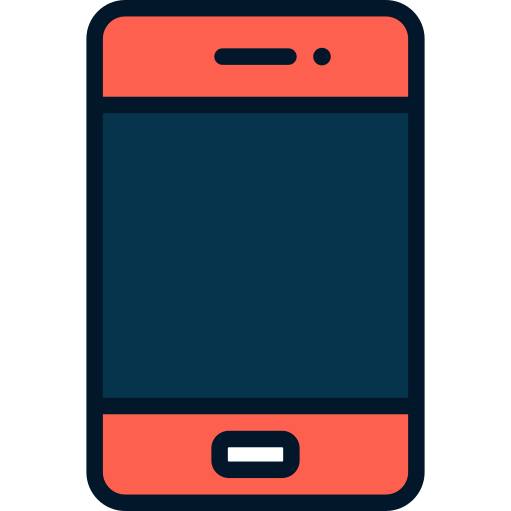
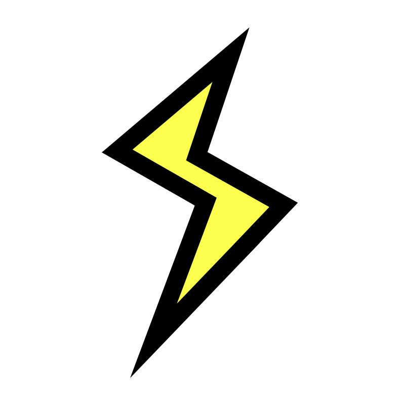

NIZAM SHAKTI RAMADHAN
Pelajar SMK Telkom Malang | Jurusan IT
Membangun web yang nggak cuma "ada", tapi memorable. Karena internet sudah terlalu banyak yang boring.

TENTANG SAYA
Saya pelajar di SMK Telkom Malang yang sedang belajar dan mengeksplorasi dunia teknologi. Fokus saya saat ini adalah mengembangkan skill web development dan mempelajari berbagai teknologi modern.
Dari bikin website static pertama yang berantakan, sampai sekarang bisa styling dengan CSS yang (semoga) nggak bikin mata sakit. Setiap project adalah learning process - dan ini salah satunya!
Minat Khusus: Artificial Intelligence (AI) - karena masa depan itu menarik!
SKILLS
Tech stack yang lagi saya pelajari dan gunakan
Terus belajar dan berkembang setiap hari!
WHAT CAN I DO FOR YOU?
Butuh web landing page yang beda dari yang lain? Saya bisa bantu!

Design Custom
Landing page dengan style unik yang stand out, bukan template generic

Responsive
Tampil perfect di semua device - mobile, tablet, desktop

Fast Delivery
Pengerjaan cepat tanpa mengorbankan kualitas hasil